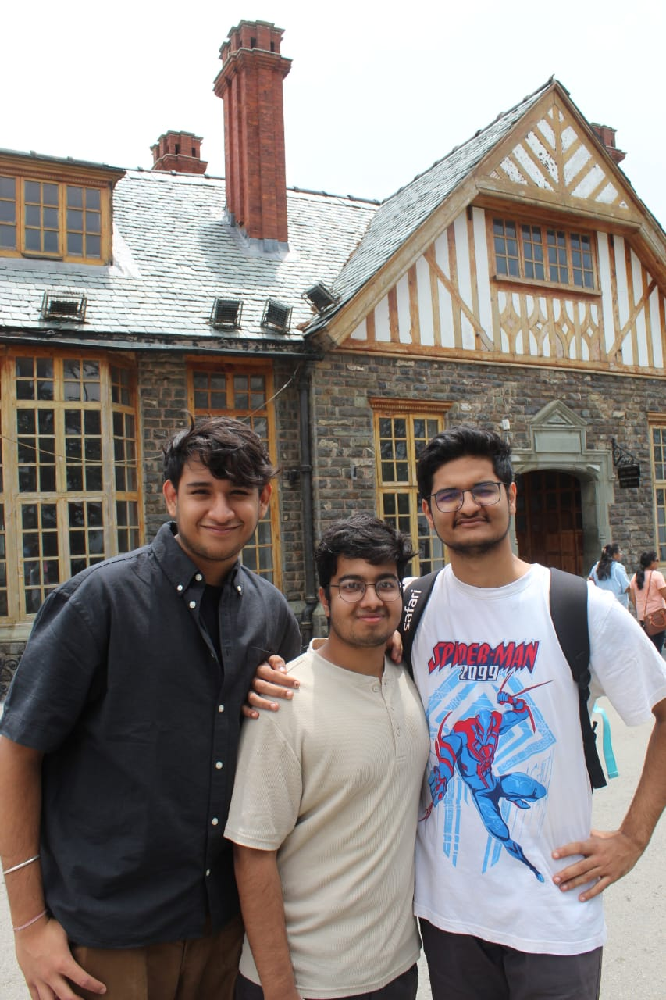
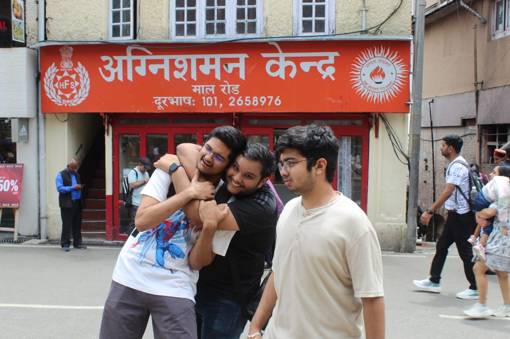
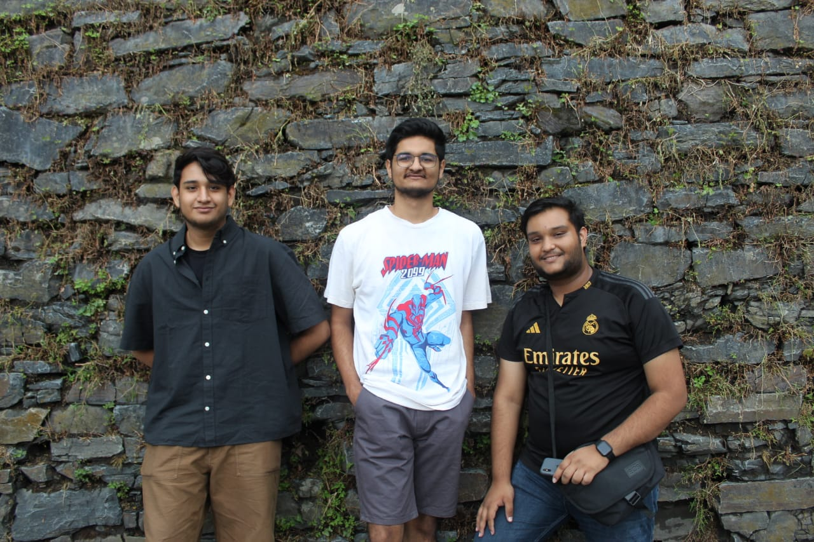
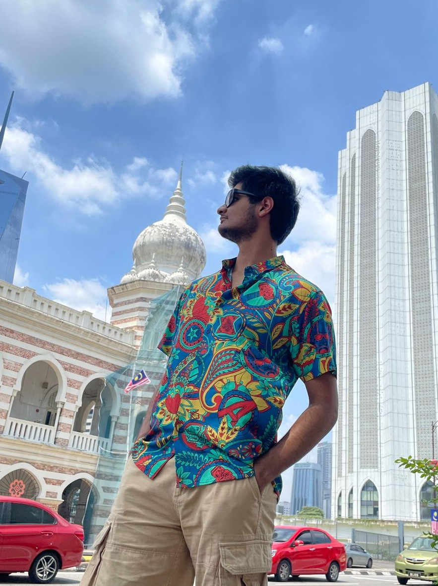

March 2024

This was my very first college trip, and what a way to begin. Pondicherry promised sun, sand, and a clean escape from lectures. We boarded the overnight train, Modi got molested, but we don't talk about that.

The French Quarter felt like a whole other country tucked into the coast: mustard walls, bougainvillea, and fresh bread down every single lane.
sun, sand and zero responsibilities

Four scooters and exactly one license, thank you Harsh Gupta ji. Baker Street bread, fresh out of the oven, was pure magic.

Then Serenity Beach struck. I had lent Aarpeet my spare glasses for the trip, and he fed them straight to the waves.
Clubbing dreams died at the dress code, shorts and slippers, so Pondy Cafe it was.
RIP my spare glasses, lent and lost by Aarpeet (2024 to 2024)
May 2024

Our homestay sat right in the coffee plantations, and every morning opened with the smell of fresh coffee, some of the best I have ever had.

A nice southern hill station, but honestly nothing compared to the north. Still, we lost whole afternoons in the rows, and Abbey Falls roared away nearby, all mist and rushing water.

Then the food that nearly ended us. One Coorgi meal so spicy it brought every one of us to tears. We downed every Coke in sight, chased it with ice cream, and still lost.


The golden monastery was the antidote, cool and unhurried, and then we climbed straight into the trees like overgrown kids.
late night Among Us, never forgetting it
June 2024

Up on Shimla's ridge with my coaching friends, the same crew from those long prep class days, just somewhere far better.
Pine clad hills and colonial charm, Mall Road, mist, and endless cups of chai until our legs flat out gave up.

We definitely did not fight the whole time, and Kush definitely did not double our journey getting there.

Somewhere between the deodars and the cold, it stopped being a trip and started being a reunion.
navigator of the year, Kush, allegedly
July 2024

My first time abroad, and Singapore did not hold back. We lost ourselves in the city first: the roar of Universal Studios, the Marina Bay skyline, and the glowing Supertrees after dark.
I took every ride in Universal, lived on the roller coasters and the Mummy, and ate at a classic American diner, a proper hamburger and a thick milkshake.

Lazy Sentosa afternoons, and the Jewel Changi waterfall that made an airport feel like a wonder. Then we sailed on by cruise to Malaysia, eating our way through land and sea every night.

By the end I had tried more new dishes than I could count, and we finished, full and happy, back in Little India.
first stamp in the passport
March 2025
Goa felt like a movie. I finished The Perks of Being a Wallflower on the sand, and ate the best pizza of my life at Southern Deck.

I was the designated driver and took us the whole coast, north to south, at two in the morning with the windows down. It was the first time I really drove, and it stuck.

more hours in the pool than on the beach

I also took over the kitchen and cooked for the whole crew. Turns out the chef's hat fits rather well. Feeding a hungry, half melted from the pool audience might be my villain origin story.


December 2025

We took the Vande Bharat north. Modi, Batra and Garv famously missed the train, and honestly we almost did too. The 13 km trek up was a quiet test of how fit we actually were, verdict: barely.
We stopped by Nikunj's home, ate an absurd amount of soya chaap, and I may have forced everyone, against their will, onto the Columbus ride at the fair. Entirely worth it.

the legs have still not forgiven us, but the soya chaap was worth every step
March 2026
Varkala by the cliffs. We saw Jatayu, I kayaked for the first time, and read Call Me by Your Name with the waves only a few feet away.

And this time it was me who lost my glasses to the sea. I finally understand Aarpeet.

Once again I was on kitchen duty, though this batch of 'brownies' was strictly for grown ups. Let's just say they hit a little different, and I'll leave the recipe politely unwritten.


I drove again here too, my second time behind the wheel, in a brand new state.


Inda Cafe's calzone and burger, still on my mind
April 2025
Squeezed into mid semester, but a paper of mine got accepted at a conference and the college footed a hotel with a pool. We ate our way down FC Road, wandered Shaniwar Wada, and slowed down in the old Parsi cafes.


a working trip that did not feel like work